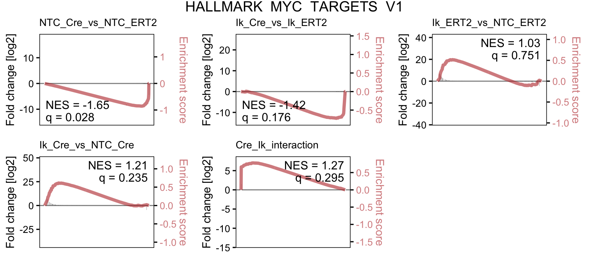

Section2 Ikaros KO/Bcat GOF DE
2.1 Background
To identify genes mis-regulated by beta-catenin (bcat) in an Ikaros-dependent manner, RNA-seq was performed on pre-B cells from CTNNB1^Ex3fl mice that allow inducible bcat gain-of-function (GOF) with addition of Cre. Both GOF and control cells were additionally transfected with sgRNA targetting Ikzf1 and Ikzf3, or not targetting control (NTC) guides.
2.2 Setup
2.3 Sample Info
files <- list.files("../processed_data/RNAseq/IkKO_bcatGOF_salmon", pattern = "quant.sf",
recursive = T, full.names = T)
pattern <- "^.+/Ctnnb1\\-GOF_(cre|ert2)\\-(NTC|Ikzf1\\-3\\-KO)\\-([0-9])/quant.sf$"
smi <- data.frame(sample_id = NA,
treatment = sub(pattern, "\\1", files),
condition = sub(pattern, "\\2", files),
replicate = sub(pattern, "\\3", files)) %>%
mutate(condition = factor(condition,
levels = c("NTC","Ikzf1-3-KO"),
labels = c("NTC","IkKO")),
treatment = factor(treatment,
levels = c("ert2","cre"),
labels = c("ERT2","CreERT2")),
combined = paste0(condition, "_", treatment),
sample_id = paste0(combined, "_r", replicate),
path = files) %>%
dplyr::select(1:3,5,4,6)
names(files) <- smi$sample_id
smi %>% arrange(sample_id) %>%
DT::datatable(escape = F, rownames = F,
colnames = c("Sample ID", "Treatment", "Condition", "Combined", "Replicate", "File Path"),
options = list(
scrollX = TRUE,
columnDefs = list(list(
targets = 5,
render = JS(
"function(data, type, row, meta) {",
"return type === 'display' && data.length > 35 ?",
"'<span title=\"' + data + '\">' + data.substr(0, 35) + '...</span>' : data;",
"}")))
), callback = JS('table.page(3).draw(false);'))2.4 Differential Expression
- Note 2021-03-05 MER: changed method here vs original analysis on 2020-09-29 to include lfcShrinkage in order to adjust L2FC estimates for low-abundance genes. Majority of changes remain unchanged but some previous outliers such as Brca2 have been substantially decreased.
txi <- tximport(files, type = "salmon", tx2gene = tx2gene, ignoreTxVersion = T)
dds <- DESeqDataSetFromTximport(txi, colData = smi,
design = ~combined)
dds <- dds[rowMeans(counts(dds)) > 5, ]
dds <- DESeq(dds)
contrasts <- list(NTC_Cre_vs_NTC_ERT2 = "NTC_CreERT2_vs_NTC_ERT2",
Ik_Cre_vs_Ik_ERT2 = "IkKO_CreERT2_vs_IkKO_ERT2",
Ik_ERT2_vs_NTC_ERT2 = "IkKO_ERT2_vs_NTC_ERT2",
Ik_Cre_vs_NTC_Cre = "IkKO_CreERT2_vs_NTC_CreERT2")
deres <- lapply(contrasts, function(contrast) {
a <- sub("^(.+)_vs_(.+)$", "\\1", contrast)
b <- sub("^(.+)_vs_(.+)$", "\\2", contrast)
res <- results(dds, contrast=c("combined", a, b))
lfcShrink(dds, contrast = c("combined", a, b),
res = res, type = "normal")
})
dds2 <- DESeqDataSetFromTximport(txi, colData = smi,
design = ~treatment+condition+treatment:condition)
dds2 <- dds2[rowMeans(counts(dds2)) > 5, ]
dds2 <- DESeq(dds2)
deres$Cre_Ik_interaction <- results(dds2, name = "treatmentCreERT2.conditionIkKO")
deres$Cre_Ik_interaction <- lfcShrink(dds2, contrast = "treatmentCreERT2.conditionIkKO",
res = deres$Cre_Ik_interaction, type = "ashr")2.5 Annotate and tidy
rlog <- rlog(dds)
genesymb <- mapIds(txdb, keys = rownames(deres[[1]]),
keytype = "GENEID", column = "SYMBOL")
deanno <- data.frame(gene_symbol = genesymb,
ensembl_id = rownames(deres[[1]]),
L2FC_NTC_Cre_vs_NTC_ERT2 = deres$NTC_Cre_vs_NTC_ERT2$log2FoldChange,
L2FC_Ik_Cre_vs_Ik_ERT2 = deres$Ik_Cre_vs_Ik_ERT2$log2FoldChange,
L2FC_Ik_ERT2_vs_NTC_ERT2 = deres$Ik_ERT2_vs_NTC_ERT2$log2FoldChange,
L2FC_Ik_Cre_vs_NTC_Cre = deres$Ik_Cre_vs_NTC_Cre$log2FoldChange,
L2FC_Cre_Ik_interaction = deres$Ik_Cre_vs_Ik_ERT2$log2FoldChange - deres$NTC_Cre_vs_NTC_ERT2$log2FoldChange,
padj_NTC_Cre_vs_NTC_ERT2 = deres$NTC_Cre_vs_NTC_ERT2$padj,
padj_Ik_Cre_vs_Ik_ERT2 = deres$Ik_Cre_vs_Ik_ERT2$padj,
padj_Ik_ERT2_vs_NTC_ERT2 = deres$Ik_ERT2_vs_NTC_ERT2$padj,
padj_Ik_Cre_vs_NTC_Cre = deres$Ik_Cre_vs_NTC_Cre$padj,
padj_Cre_Ik_interaction = deres$Cre_Ik_interaction$padj,
av_expr = rowMeans(assay(rlog)),
av_NTC_ERT2 = rowMeans(assay(rlog)[,grep("NTC_ERT2", colnames(rlog))]),
av_NTC_Cre = rowMeans(assay(rlog)[,grep("NTC_CreERT2", colnames(rlog))]),
av_IkKO_ERT2 = rowMeans(assay(rlog)[,grep("IkKO_ERT2", colnames(rlog))]),
av_IkKO_Cre = rowMeans(assay(rlog)[,grep("IkKO_CreERT2", colnames(rlog))]))
deanno <- cbind(deanno, assay(rlog))
write.xlsx(deanno, "../results/IkKO_bcatGOF_DE.2021-03-05.xlsx", firstRow = TRUE, firstCol = TRUE)
saveRDS(deanno, "../processed_data/RNAseq/IkKO_bcatGOF_DE.2021-03-05.rds")deanno <- readRDS("../processed_data/RNAseq/IkKO_bcatGOF_DE.2021-03-05.rds")
contrasts <- list(NTC_Cre_vs_NTC_ERT2 = "NTC_Cre_vs_NTC_ERT2",
Ik_Cre_vs_Ik_ERT2 = "Ik_Cre_vs_Ik_ERT2",
Ik_ERT2_vs_NTC_ERT2 = "Ik_ERT2_vs_NTC_ERT2",
Ik_Cre_vs_NTC_Cre = "Ik_Cre_vs_NTC_Cre",
Cre_Ik_interaction = "Cre_Ik_interaction")
lapply(contrasts, function(x) {
deanno[, grep(x, colnames(deanno))] %>%
dplyr::filter(.[,2] < 0.05) %>%
summarise(condition = x,
upreg = nrow(.[.[,1] > 0.58, ]),
dnreg = nrow(.[.[,1] < -0.58, ]))
}) %>% bind_rows() %>% kableExtra::kable()| condition | upreg | dnreg |
|---|---|---|
| NTC_Cre_vs_NTC_ERT2 | 176 | 99 |
| Ik_Cre_vs_Ik_ERT2 | 227 | 46 |
| Ik_ERT2_vs_NTC_ERT2 | 1680 | 1183 |
| Ik_Cre_vs_NTC_Cre | 1681 | 1165 |
| Cre_Ik_interaction | 121 | 52 |
deanno %>%
dplyr::filter(padj_Cre_Ik_interaction < 0.05) %>%
dplyr::arrange(padj_Cre_Ik_interaction) %>%
dplyr::select(1,7,12,14:17) %>%
dplyr::mutate_at(2, function(x) round(x, 3)) %>%
dplyr::mutate_at(4:7, function(x) round(x, 2)) %>%
dplyr::mutate_at(3, function(x) formatC(x, format = "e", digits = 3)) %>%
DT::datatable(escape = F, rownames = F,
options = list(
columnDefs = list(list(className = 'dt-right', targets = 2)),
scrollX = TRUE))2.6 Volano plot
plotdat <- lapply(contrasts, function(contrast) {
x <- deanno[, c(1,grep(contrast, colnames(deanno)))]
colnames(x)[2:3] <- c("L2FC", "qval")
x$col <- "B"
x[which(x$qval < 0.05 & x$L2FC > 0.58),]$col <- "A"
x[which(x$qval < 0.05 & x$L2FC < -0.58),]$col <- "C"
if (any(x$qval < 1e-100, na.rm = T)) x[which(x$qval<1e-100),]$qval <- 1e-100
topg <- top_n(x, 50, -qval)$gene_symbol
x$label <- ifelse(x$gene_symbol %in% c(topg) & x$qval < 1e-10,
x$gene_symbol, "")
x$comparison <- contrast
return(x)
}) %>% bind_rows()
(p <- ggplot(plotdat, aes(x = L2FC, y = -log10(qval))) +
geom_hline(yintercept = -log10(0.01), color = "firebrick", alpha = .2, lty=2) +
geom_vline(xintercept = 0, color = "firebrick", alpha = .2, lty=2) +
geom_point(aes(col=col), alpha = .5, size=1) +
ggrepel::geom_text_repel(aes(label = label)) +
facet_wrap(~comparison, nrow = 3, scales = "free_y") +
scale_color_manual(values = c("firebrick4","grey40","steelblue4")) +
scale_x_continuous(name = "Fold change (log2)") +
scale_y_continuous(name = "Significance (-log10 p-value)") +
theme(text = element_text(size = 14, color = "black", family = "Arial"),
axis.text = element_text(size = 11, color = "black", family = "Arial"),
panel.grid = element_blank(),
panel.background = element_blank(),
panel.border = element_rect(color = "black", fill = NA),
strip.background = element_blank(),
strip.text = element_text(size = 12, color = "black", family = "Arial"),
legend.position = "none"))
2.7 Full GSEA
Note: This analysis was run on all REACTOME, KEGG, MSigDB Hallmark, and WIKIPATHWAY database gene sets (with some minor filtering for irrelevant sets). This is useful for data exploration but will inflate q-value/padj simply due to the large number of tests performed, hence these results should be used to identify potentially interesting pathways before performing more selective enrichment testing for more appropriate statistical values.
library(msigdbr)
library(fgsea)
msig <- rbind(msigdbr(species = "Mus musculus", category = "H"),
msigdbr(species = "Mus musculus", category = "C2", subcategory = "CP:REACTOME"),
msigdbr(species = "Mus musculus", category = "C2", subcategory = "CP:KEGG"),
msigdbr(species = "Mus musculus", category = "C2", subcategory = "CP:WIKIPATHWAYS"))
gs <- split(msig$gene_symbol, msig$gs_name)
internal_gs <- readRDS("../../resources/internal_genesets_Mm.rds")
gs <- c(gs, internal_gs)
gs <- gs[!grepl(paste0("sperm|xeno|graft|naba|spinal|neuro|sclerosis",
"|tion_of_hscs|photo|leish|diabetes|lupus|ebola",
"|staph|syndrome|myo|nicotin|asthma|thyroid_stim",
"|gastrin|alcohol|nutrient|carcinoma|muscle_contr",
"|metapathway|amyloid|fusion_mutants|circadian"),
names(gs), ignore.case = T)]
gl <- lapply(contrasts, function(contrast) {
tmp <- deanno[,grep(contrast, colnames(deanno))]
colnames(tmp) <- c("L2FC","qval")
tmp <- (tmp$L2FC * (-log10(tmp$qval+1e-50)/10))
names(tmp) <- deanno$gene_symbol
tmp <- tmp[!is.na(names(tmp)) & names(tmp) != "" & !is.na(tmp) & is.finite(tmp)]
tmp <- tmp[order(-tmp)]
tmp[!duplicated(names(tmp))]
})
gseres <- lapply(gl, function(x) {
fgseaSimple(pathways = gs, stats = x,
nperm = 1000, minSize = 10, maxSize = 500) %>%
dplyr::filter(lengths(leadingEdge) > 3) %>%
arrange(pval)
})
wb <- createWorkbook()
lapply(contrasts, function(contrast) {
gse <- as.data.frame(gseres[[contrast]])
addWorksheet(wb, sheetName = contrast)
writeData(wb, gse, sheet = contrast, rowNames = F)
freezePane(wb, sheet = contrast, firstRow = TRUE, firstCol = TRUE)
return(NULL)
})## $NTC_Cre_vs_NTC_ERT2
## NULL
##
## $Ik_Cre_vs_Ik_ERT2
## NULL
##
## $Ik_ERT2_vs_NTC_ERT2
## NULL
##
## $Ik_Cre_vs_NTC_Cre
## NULL
##
## $Cre_Ik_interaction
## NULLsaveWorkbook(wb, "../results/IkKO_bcatGOF_DE_fullGSEA.2021-03-05.xlsx", overwrite = T)
lapply(contrasts, function(x) {
tmp <- gseres[[x]] %>% dplyr::filter(pval < 0.5) %>% dplyr::select(pathway, NES)
tmp[,2] <- round(tmp[,2], 3)
colnames(tmp)[2] <- x
return(tmp) }) %>%
Reduce(f = function(x,y) { merge(x, y, by="pathway") }) %>%
arrange(Cre_Ik_interaction) %>%
mutate(pathway = ifelse(pathway %in% names(internal_gs), pathway,
paste0('<a href=https://www.gsea-msigdb.org/gsea/msigdb/cards/',
pathway, '.html>', substr(pathway, 0,30), '</a>'))) %>%
DT::datatable(escape = F, rownames = F,
options = list(
scrollX = TRUE))2.8 Select GSEA
poi <- c("HALLMARK_MYC_TARGETS_V1","HALLMARK_MYC_TARGETS_V2",
"REACTOME_DEATH_RECEPTOR_SIGNALLING",
"REACTOME_MITOTIC_G1_PHASE_AND_G1_S_TRANSITION",
"HALLMARK_KRAS_SIGNALING_UP",
"REACTOME_SIGNALING_BY_NOTCH",
"Cosgun_Bcatenin_GOF_UP",
"Schjerven_Ikzf1_KO_UP",
"GSE73238_CD8_TcfLefDKO_UP")gsub <- gs[names(gs) %in% poi]
gseres <- lapply(gl, function(x) {
fgseaSimple(pathways = gsub, stats = x,
nperm = 10000, minSize = 10, maxSize = 500) %>%
arrange(pval)
})
saveRDS(gseres, "../processed_data/RNAseq/IkKO_bcatGOF_DE_subGSEA.2021-03-05.rds")
wb <- createWorkbook()
lapply(names(gseres), function(contrast) {
gse <- as.data.frame(gseres[[contrast]])
addWorksheet(wb, sheetName = contrast)
writeData(wb, gse, sheet = contrast, rowNames = F)
freezePane(wb, sheet = contrast, firstRow = TRUE, firstCol = TRUE)
return(gse)
})
saveWorkbook(wb, "../results/IkKO_bcatGOF_DE_subGSEA.2021-03-05.xlsx", overwrite = T)gseres <- readRDS("../processed_data/RNAseq/IkKO_bcatGOF_DE_subGSEA.2021-03-05.rds")
int_levels <- gseres$Cre_Ik_interaction %>% arrange(-NES) %>% .$pathway
lapply(names(gseres), function(x) {
gseres[[x]] %>%
mutate(pvaltxt = ifelse(padj < 0.001, "***",
ifelse(padj < 0.01, "**",
ifelse(padj < 0.05, "*", "-"))),
cond = x,
score = -log10(padj)*NES) %>%
dplyr::select(pathway, score, pvaltxt, cond) }) %>%
bind_rows() %>%
mutate(cond=factor(cond, levels=unique(cond)),
pathway = factor(pathway, levels=int_levels)) %>%
ggplot(aes(x=cond, y=pathway, fill=score, label=pvaltxt)) +
geom_tile() +
geom_text() +
scale_x_discrete(expand=c(0,0), name="") +
scale_y_discrete(expand=c(0,0), name="") +
scale_fill_gradient2(low="steelblue4", mid="white", high="firebrick4") +
theme_bw(base_size = 12, base_family = "Arial") +
theme(panel.background = element_blank(),
panel.border = element_rect(color="black", fill=NA),
axis.text.x = element_text(angle=45, hjust=1),
axis.ticks = element_blank(),
legend.position = "none")2.9 GSEA plots
source("../../resources/fsea.R")
library(rvg)
library(officer)
library(cowplot)
ppt <- read_pptx()
pl <- lapply(poi, function(path) {
pathplots <- lapply(names(gseres), function(contrast) {
plot_fgsea(gseres[[contrast]], gl[[contrast]], gs, path) +
ggtitle(contrast) +
theme(plot.title = element_text(size=10))
})
title <- ggdraw() + draw_label(path)
combined <- plot_grid(plotlist = pathplots, align = "vh", ncol = 3)
p <- plot_grid(title, combined, ncol = 1, rel_heights = c(0.05, 1))
add_slide(x = ppt, layout = "Title and Content", master = "Office Theme") %>%
ph_with(value = dml(ggobj = p),
location = ph_location(height = 3.5, width = 9,
left = 0.25, top = 0.5),
bg = "transparent")
return(p)
})
names(pl) <- poi
print(ppt, target="../img/IkKO_bcatGOF_DE_GSEAplots.2021-03-05.pptx")
pl$HALLMARK_MYC_TARGETS_V1
2.10 Downloads
- Differential expression results (xlsx).
- Full GSEA results for exploratory analysis (xlsx).
- GSEA subset for stats on selected pathways (xlsx).
- GSEA plots (vecotorised pptx).
2.11 Session info
## R version 4.0.3 (2020-10-10)
## Platform: x86_64-apple-darwin17.0 (64-bit)
## Running under: macOS Catalina 10.15.7
##
## Matrix products: default
## BLAS: /Library/Frameworks/R.framework/Versions/4.0/Resources/lib/libRblas.dylib
## LAPACK: /Library/Frameworks/R.framework/Versions/4.0/Resources/lib/libRlapack.dylib
##
## locale:
## [1] en_US.UTF-8/en_US.UTF-8/en_US.UTF-8/C/en_US.UTF-8/en_US.UTF-8
##
## attached base packages:
## [1] parallel stats4 stats graphics grDevices utils datasets
## [8] methods base
##
## other attached packages:
## [1] gdtools_0.2.3 cowplot_1.1.1
## [3] officer_0.3.16 rvg_0.2.5
## [5] fgsea_1.16.0 msigdbr_7.2.1
## [7] EnsDb.Mmusculus.v79_2.99.0 ensembldb_2.14.0
## [9] AnnotationFilter_1.14.0 GenomicFeatures_1.42.1
## [11] AnnotationDbi_1.52.0 DT_0.17
## [13] openxlsx_4.2.3 DESeq2_1.30.1
## [15] SummarizedExperiment_1.20.0 Biobase_2.50.0
## [17] MatrixGenerics_1.2.1 matrixStats_0.58.0
## [19] GenomicRanges_1.42.0 GenomeInfoDb_1.26.2
## [21] IRanges_2.24.1 S4Vectors_0.28.1
## [23] BiocGenerics_0.36.0 tximport_1.18.0
## [25] forcats_0.5.1 stringr_1.4.0
## [27] dplyr_1.0.4 purrr_0.3.4
## [29] readr_1.4.0 tidyr_1.1.3
## [31] tibble_3.1.0 ggplot2_3.3.3
## [33] tidyverse_1.3.0
##
## loaded via a namespace (and not attached):
## [1] uuid_0.1-4 readxl_1.3.1 backports_1.2.1
## [4] fastmatch_1.1-0 BiocFileCache_1.14.0 systemfonts_1.0.1
## [7] lazyeval_0.2.2 splines_4.0.3 BiocParallel_1.24.1
## [10] crosstalk_1.1.1 digest_0.6.27 htmltools_0.5.1.1
## [13] fansi_0.4.2 magrittr_2.0.1 memoise_2.0.0
## [16] Biostrings_2.58.0 annotate_1.68.0 modelr_0.1.8
## [19] svglite_2.0.0 askpass_1.1 prettyunits_1.1.1
## [22] colorspace_2.0-0 blob_1.2.1 rvest_0.3.6
## [25] rappdirs_0.3.3 ggrepel_0.9.1 haven_2.3.1
## [28] xfun_0.21 crayon_1.4.1 RCurl_1.98-1.2
## [31] jsonlite_1.7.2 genefilter_1.72.1 survival_3.2-7
## [34] glue_1.4.2 kableExtra_1.3.4 gtable_0.3.0
## [37] zlibbioc_1.36.0 XVector_0.30.0 webshot_0.5.2
## [40] DelayedArray_0.16.2 scales_1.1.1 DBI_1.1.1
## [43] Rcpp_1.0.6 viridisLite_0.3.0 xtable_1.8-4
## [46] progress_1.2.2 bit_4.0.4 htmlwidgets_1.5.3
## [49] httr_1.4.2 RColorBrewer_1.1-2 ellipsis_0.3.1
## [52] pkgconfig_2.0.3 XML_3.99-0.5 farver_2.1.0
## [55] sass_0.3.1 dbplyr_2.1.0 locfit_1.5-9.4
## [58] utf8_1.1.4 tidyselect_1.1.0 labeling_0.4.2
## [61] rlang_0.4.10 munsell_0.5.0 cellranger_1.1.0
## [64] tools_4.0.3 cachem_1.0.4 cli_2.3.1
## [67] generics_0.1.0 RSQLite_2.2.3 broom_0.7.5
## [70] evaluate_0.14 fastmap_1.1.0 yaml_2.2.1
## [73] knitr_1.31 bit64_4.0.5 fs_1.5.0
## [76] zip_2.1.1 xml2_1.3.2 biomaRt_2.46.3
## [79] compiler_4.0.3 rstudioapi_0.13 curl_4.3
## [82] reprex_1.0.0 geneplotter_1.68.0 bslib_0.2.4
## [85] stringi_1.5.3 highr_0.8 lattice_0.20-41
## [88] ProtGenerics_1.22.0 Matrix_1.3-2 vctrs_0.3.6
## [91] pillar_1.5.0 lifecycle_1.0.0 jquerylib_0.1.3
## [94] data.table_1.14.0 bitops_1.0-6 rtracklayer_1.50.0
## [97] R6_2.5.0 bookdown_0.21 gridExtra_2.3
## [100] assertthat_0.2.1 openssl_1.4.3 withr_2.4.1
## [103] GenomicAlignments_1.26.0 Rsamtools_2.6.0 GenomeInfoDbData_1.2.4
## [106] hms_1.0.0 grid_4.0.3 rmarkdown_2.7
## [109] lubridate_1.7.10